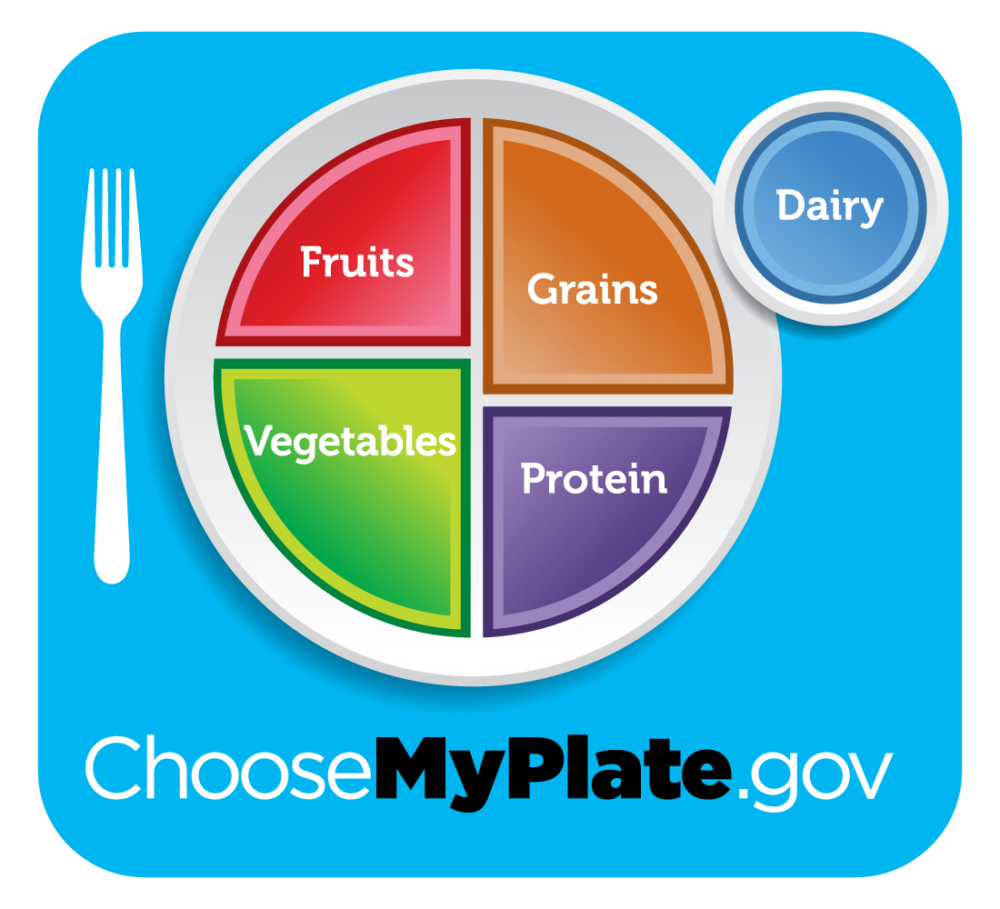
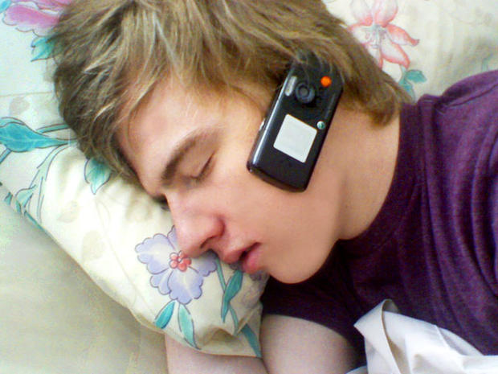
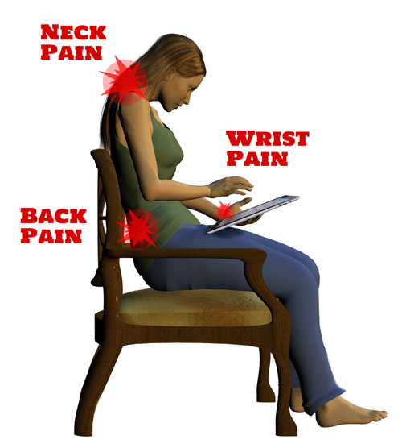
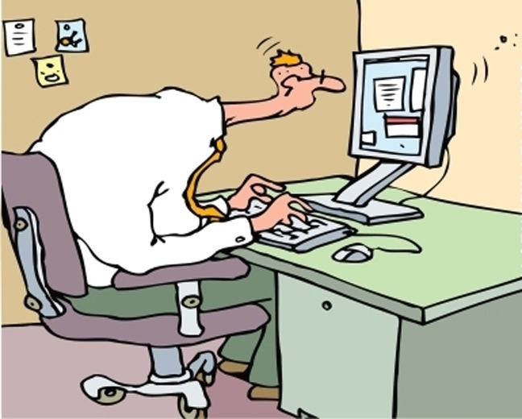

The key to eating well is to enjoy a variety of nutritious food from each of the five groups of food
Here are the five important food groups:
For more information,visit: www.choosemyplate.gov
Healthy snacking is another way to help you get all the nutrients you need to stay healthy and feel energized. Snacks can keep your blood glucose (sugar) levels remain stable throughout the day, if you find your energy level drops between meals.
The key to healthy snacking are to:
Fresh fruit (a banana, apple or orange)
Other fresh, frozen or canned fruit (in water or light syrup): peaches, mandarin oranges, grapes, blueberries, strawberries or raspberries.
A large stalk of celery with 1/4 cup low fat, low sodium cottage cheese
Mini carrots, cut up cucumbers, zucchinis, cherry tomatoes or other raw vegetables with low fat dip
Watching tv before bed negatively impacts your sleep. The bright light stimulates the brain wich can affect the secretion of melatonin necessary for quality sleep. In fact , according to a Sleep Rate Survey, 55% of respondents noted their before-bed tv sessions were costing them up to three hours of sleep per night. In addition, 46% of workers and 23% of moms and dads said the lack of sleep was impacting their jobs and parental commitments .

If you have any sort of gadget in your room, whether it's a tablet, tv computer, or even the glow of an alarm clock, it can make it extremely hard for you to fall into a sound, deep sleep.
"One of the most simple but important reasons technology affects our sleep is cognitive stimulation."
If something in your room is glowing, it's interfering with your melatonin. In addition, if you are playing a video game or working on the computer before bed, it causes your body to tense up. Even a little tension can cause your body to release cortisol, a stress hormone produced by the adrenal gland, which causes you to feel wired instead of sleepy.
The solution is simple: just unplug before bed. Scientists recomended that you should turn off all technology in your bedroom prior to going to sleep. Also, give yourself 15 to 30 minutes of technology-free time before bed.

Tablets users often look at their device while it's resting on their lap, which puts a lot of strain on the neck muscles. "If you think about your position when you are hunched over looking down, your head is hanging out over space,so you are using your neck muscles to support the weight."
If you catch yourself staring downward, move your tablet to a table- movie position; it's the only position where your posture is neutral, which insures that not a lot of strain is being placed on your neck. Remember, if you're using your tablet for a decent amount of time, try to move around as much as possible.

Most jobs require that we sit in front of a computer for hours on end. When you add bad posture into the mix, it's a recipe for disaster. Bad computer posture can cause carpal tunnel synddrome; it already affects 5.8% of the population. The standard treatment, even for a mild case? Surgery. An easier solution? Be proactive by using proper posture.
Step away from the computer screen. Break are necessary for good health; if you stare at a screen all day without giving yourself a break, you're doing much more damage than you may think. Your joints, muscles, circulatory system, and eyes all need a break and a change of scenery throughout the day. Sitting for hours on end can even cause blood clots to form. The eye strain that comes from staring at a screen can harm your vision, even making it dangerous for you to drive home. Ready to fix it? Set an alarm clock reminder to get up and strech your legs regularly. Another fix? Keep a bottle of water at your desk, making sure to sip it regularly. Not only will it keep you hydrated, but it also forces you to get up and go to the bathroom (thus causing you to take a break.)
If you follow these simple suggestions, you should see improvements in your health.